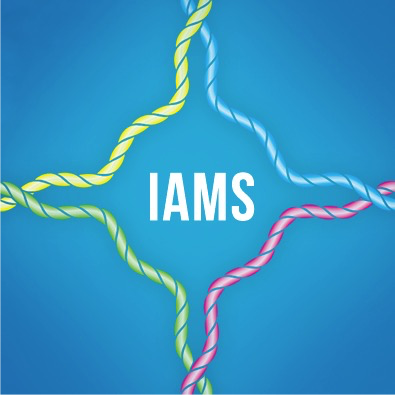

2018年ハッカソン・シンポジウム
昨年度に引き続き、初日に研究会合を行います。
昨年度は企画自体が急拵えだったため、講演者の先生方にも色々ご迷惑をお掛けしましたが、今年度はもっと時間を掛けて企画し、ミニ・シンポジウムの形態で開催することになりました。具体的には、昨年度に引き続き
- 「質量分析関係分野の研究者で、インフォマティクスや情報処理に詳しくない人」向けの入門的内容（特にDBCLSが公開しているバイオインフォマティクス・ツールについて）
- 「バイオインフォマティクス（非質量分析分野）の研究者で、質量分析について詳しくない人」向けの入門的内容
を、10人の先生方にご講演いただきます。更にこれに加えて
- インフォマティクスを用いた研究の発表、及び
- ハッカソン・ホスト組織である徳島大学先端酵素学研究所での最先端の研究発表
についても5人の先生方にご講演いただくことになっています。
（なお、講演者のご都合により、当初発表から内容を若干変更しました。(18/6/30)）
本ミーティングが、実験系・質量分析系・情報系の参加者の間でのコラボ、特に今回のハッカソンでのコラボが進んでいくことの一助になれば幸いです。
※ なお本ページには、随時情報を追加していく予定です。
シンポジウム概要
- 会合名： 第2回・質量分析インフォマティクス・ハッカソン・シンポジウム
- 開催日時： 2018年7月15日（日） 午後1時 ～ 午後6時30分
- 正午開場・午後7時閉場
- 正午開場・午後7時閉場
-
開催場所： 徳島市・徳島大学 先端酵素学研究所 藤井節郎記念医科学センター
（会場アクセスについての詳細情報）
- 参加費・参加登録： 無料 シンポジウムのみ参加の場合も、原則としてハッカソン申し込みページから申し込みを行ってください。
- 本シンポジウムのポスターはこちら （PDF形式、約8.5MB）
- 主催： 質量分析インフォマティクス研究会 （日本バイオインフォマティクス学会 (JSBi)）
- 共催： 徳島大学 先端酵素学研究所 共同利用・共同研究拠点事業 
- 協賛： 公益財団法人・加藤記念バイオサイエンス振興財団
- 協力： 大学共同利用機関法人・情報・システム研究機構 データサイエンス共同利用基盤施設 ライフサイエンス統合データベースセンター(DBCLS)

シンポジウム進行表
当日は軽装(casual)でおいでください。
◎…研究発表、 ●…チュートリアル
| 時間帯 | 担当者（敬称略） | 概要 | |
|---|---|---|---|
| 12:00 | 開場＠藤井節郎記念ホール （→交通情報ページ・トップ） | ||
| 12:00～13:00 | 参加者受付 | ||
| 13:00～13:10 | オーガナイザー | 開会挨拶、当日の予定告知 | |
| 13:10～14:15 | セッション1 （65分） （座長：吉沢 明康，五斗 進） | ||
| ●13:10～13:25 | 五斗 進 | (DBCLS) | 「DBCLS/NBDC が提供するデータベースとツールの紹介」 |
| ●13:25～13:40 | 片山 俊明 | (DBCLS) | 「セマンティック・ウェブによるゲノムデータベース構築」 |
| ●13:40～13:55 | 守屋 勇樹 | (DBCLS) | 「プロテオーム統合データベース jPOST の紹介」 |
| ◎13:55～14:15 | 内藤 雄樹 | (DBCLS) | 「核酸医薬およびゲノム編集の研究を支援するための正確で漏れのない塩基配列検索技術」 |
| 14:15～14:30 | 休憩 （15分） | ||
| 14:30～15:40 | セッション2 （70分） （座長：五斗 進，早川 英介） | ||
| ●14:30～14:45 | 津川 裕司 | (理研) | 「質量分析データの構造と読み方およびピーク検出方法」 |
| ●14:45～15:00 | 早川 英介 | (OIST) | 「質量情報と化合物情報の連携」 |
| ●15:00～15:20 | 山本 博之 | (HMT) | 「多変量解析を用いたメタボロームデータ解析」 |
| ◎15:20～15:40 | 津川 裕司 | (理研) | "Computational mass spectrometry for plant specialized metabolomes" |
| 15:40～15:55 | 休憩 （15分） | ||
| 15:55～17:10 | セッション3 （75分） （座長：早川 英介，小迫 英尊） | ||
| ◎15:55～16:20 | 小迫 英尊 | (徳島大) | 「先端プロテオミクス技術によるSTING/TBK1シグナル経路の解析」 |
| ◎16:20～16:45 | 松下 洋輔 | (徳島大) | 「トリプルネガティブ乳がんの包括的ゲノム解析」 |
| ◎16:45～17:10 | 齊藤 達哉 | (徳島大) | 「自然免疫研究におけるオミクスの有用性」 |
| 17:10～17:25 | 休憩 （15分） | ||
| 17:25～18:25 | セッション4 （60分） （座長：小迫 英尊，小林 大樹） | ||
| ●17:25～17:40 | 小林 大樹 | (熊本大) | 「質量分析によるプロテオーム解析」 |
| ●17:40～17:55 | 加藤 雅樹 | (基生研) | 「グライコプロテオミクス」 |
| ●17:55～18:10 | 渡辺 由 | (新潟大) | 「リポジトリサービスの開発とデータ転送」 |
| ●18:10～18:25 | 田中 聡 | (Trans-IT) | 「質量分析データ表示ツール Mass++」 |
| 18:25～18:30 | オーガナイザー | 閉会挨拶 | |
| 19:00 | 閉場 | ||
| （ レセプション参加者は阿波観光ホテルに移動 （→ 交通情報）） | |||
| 19:30～21:30 | 事前申込者 |
レセプション ＠ 阿波観光ホテル （国内版バイオハッカソンと合同） |
|
| 21:30～ |
（自由時間） （申込者は阿波観光ホテルにて宿泊） |
||
※ 講師との個別ディスカッションは、この後のレセプション及び翌日からのハッカソンの時間をご利用下さい。
講師所属先（敬称略、講演順）
五斗 進 情報・システム研究機構(ROIS) データサイエンス共同利用基盤施設(DS) ライフサイエンス統合データベースセンター(DBCLS)
片山 俊明 情報・システム研究機構(ROIS) データサイエンス共同利用基盤施設(DS) ライフサイエンス統合データベースセンター(DBCLS)
守屋 勇樹 情報・システム研究機構(ROIS) データサイエンス共同利用基盤施設(DS) ライフサイエンス統合データベースセンター(DBCLS)
内藤 雄樹 情報・システム研究機構(ROIS) データサイエンス共同利用基盤施設(DS) ライフサイエンス統合データベースセンター(DBCLS)
津川 裕司 理化学研究所 環境資源科学研究センター
早川 英介 沖縄科学技術大学院大学(OIST)
山本 博之 ヒューマン・メタボローム・テクノロジーズ(HMT) 研究開発本部
小迫 英尊 徳島大学 先端酵素学研究所 藤井節郎記念医科学センター
松下 洋輔 徳島大学 先端酵素学研究所
齊藤 達哉 徳島大学 先端酵素学研究所
小林 大樹 熊本大学 大学院生命科学研究部（医学部）
加藤 雅樹 自然科学研究機構(NINS) 基礎生物学研究所(NIBB)
渡辺 由 新潟大学 大学院医歯学総合研究科（医学系）
田中 聡 Trans-IT
オーガナイザー
小迫 英尊 徳島大学 先端酵素学研究所 藤井節郎記念医科学センター
吉沢 明康 京都大学 大学院薬学研究科
守屋 勇樹 情報・システム研究機構(ROIS) データサイエンス共同利用基盤施設(DS) ライフサイエンス統合データベースセンター(DBCLS)
河野 信 情報・システム研究機構(ROIS) データサイエンス共同利用基盤施設(DS) ライフサイエンス統合データベースセンター(DBCLS)
本ミーティングの開催にあたっては、日本バイオインフォマティクス学会(JSBi)及び加藤記念バイオサイエンス振興財団からの助成に加え、
情報・システム研究機構 データサイエンス共同利用基盤施設による公募型共同研究（共同研究集会）
ROIS-DS-JOINT(002RM2018)［採択者：吉沢 明康］
の助成を受けています。
Page Last Updated: July 16, 2018